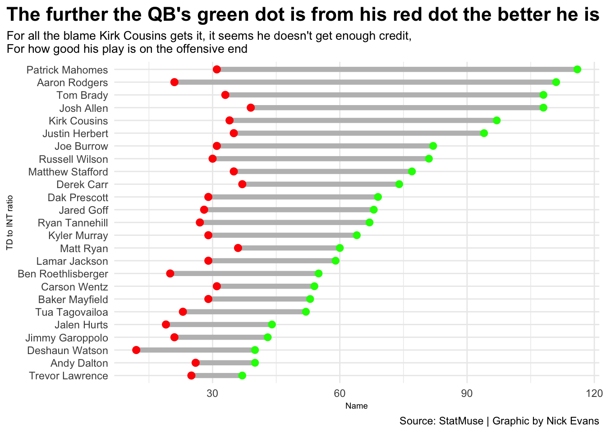
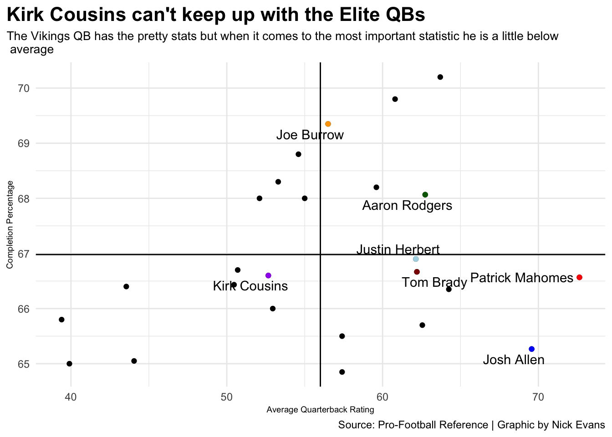
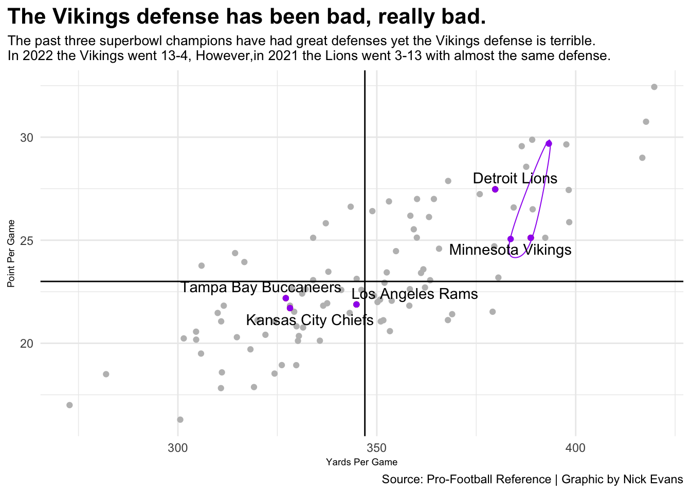

It’s been five years since the marriage between the Minnesota Vikings and Kirk Cousins started. The question this offseason with trade rumors and no extension given to Cousins is whether it’s time to move on. I decided to find out myself if it was worth it to move on from Cousins using data of his last three seasons compared to the league. With this first graph I took at touchdowns to interceptions the last three years. The longer the line on the graph, the better it is. As the graph shows he is top 5 in passing touchdowns and limits the turnovers well. This looks like a quarterback that could win you a Superbowl with the right weapons. He’s up there with some of the best quarterbacks in the league such as Patrick Mahomes, Aaron Rodgers and Josh Allen. The problem I noticed when looking at all the data is that when you start looking at the advanced stats that’s when it starts to change.
Code
library(tidyverse)library(ggrepel)library(ggalt)library(ggtext)defense20 <-read_csv("2020NFLDefensiveStats.csv") %>%mutate(Season =2020)defense21 <-read_csv("2021NFLDefensiveStats.csv") %>%mutate(Season =2021)defense22 <-read_csv("2022DefensiveStats.csv") %>%mutate(Season =2022)defense <-bind_rows(defense20, defense21, defense22) %>%mutate(TeamSeason =paste(Tm, Season)) %>%mutate(PPG = PA/G,YPG = TotalYds/G ) %>%filter(Rk >0)qb20 <-read_csv("2020NFLDefensiveStats.csv") %>%mutate(Season =2020)qb21 <-read_csv("2021NFLDefensiveStats.csv") %>%mutate(Season =2021)qb22 <-read_csv("2022DefensiveStats.csv") %>%mutate(Season =2022)vikes <- defense %>%filter(Tm =="Minnesota Vikings")chiefs <- defense %>%filter(Tm =="Kansas City Chiefs")rams <- defense %>%filter(Tm =="Los Angeles Rams")bucs <- defense %>%filter(Tm =="Tampa Bay Buccaneers")texans <- defense %>%filter(Tm =="Houston Texans")lions <- defense %>%filter(Tm =="Detroit Lions")panthers <- defense %>%filter(Tm =="Carolina Panthers")eight <- defense %>%filter(Tm =="Minnesota Vikings"| Tm =="Kansas City Chiefs"| Tm =="Los Angeles Rams"| Tm =="Tampa Bay Buccaneers"| Tm =="Houston Texans"| Tm =="Detroit Lions"| Tm =="Carolina Panthers")five <- defense %>%filter(TeamSeason =="Minnesota Vikings 2022"| TeamSeason =="Kansas City Chiefs 2022"| TeamSeason =="Los Angeles Rams 2021"| TeamSeason =="Tampa Bay Buccaneers 2020"| TeamSeason =="Detroit Lions 2021")qb2020 <-read_csv("2020QBStats.csv") %>%mutate(Season =2020, PlayerSeason =paste(Player, Season))qb2021 <-read_csv("2021QBStats.csv") %>%mutate(Season =2021, PlayerSeason =paste(Player, Season))qb2022 <-read_csv("qbstats22.csv") %>%mutate(Season =2022, PlayerSeason =paste(Player, Season))qb <-bind_rows(qb2020, qb2021, qb2022) qbstats <-read_csv("TDStats.csv")starters <- qb %>%filter(Pos =="QB", GS >12)kirk <- starters %>%filter(Player =="Kirk Cousins")topQb <- starters %>%group_by(Player) %>%summarise(AverageQBR =mean(QBR),AverageCmp =mean(`Cmp%`) ) %>%ungroup() %>%top_n(25)kirk2 <- topQb %>%filter(Player =="Kirk Cousins")pat <- topQb %>%filter(Player =="Patrick Mahomes")arod <- topQb %>%filter(Player =="Aaron Rodgers")josh <- topQb %>%filter(Player =="Josh Allen")elite <- topQb %>%filter(Player =="Joe Burrow"| Player =="Justin Herbert"| Player =="Tom Brady")justin <- topQb %>%filter(Player =="Justin Herbert")joe <- topQb %>%filter(Player =="Joe Burrow")tom <- topQb %>%filter(Player =="Tom Brady")ggplot() +geom_dumbbell(data=qbstats,aes(y=reorder(NAME, TD), x=TD, xend=INT),size =2,colour ="grey",colour_x ="green",colour_xend ="red" ) +labs(title="The further the QB's green dot is from his red dot the better he is",subtitle="For all the blame Kirk Cousins gets it, it seems he doesn't get enough credit,\nFor how good his play is on the offensive end",x="Name",y="TD to INT ratio",caption="Source: StatMuse | Graphic by Nick Evans" ) +theme_minimal() +theme(plot.title.position ="plot",plot.title =element_text(size =16, face ="bold"),plot.subtitle =element_text(size=10),axis.title =element_text(size =7), )

The next graph I put together looks at completion percentage and QBR. QBR is the holy grail statistic people look at for quarterbacks as it’s basically a grade on their whole season. When looking at this graph Cousins falls from the elite quarterbacks even into the below average section. As a Cousins and Vikings fan this one hurts to see but it isn’t very surprising. As a fan I have watched Cousins for all five of his seasons and I do believe he is one of the top ten quarterbacks in the league, but I have always known he’s not elite. This isn’t anything against Cousins, but he just doesn’t have the talent the other quarterbacks do. The next chart will show that Kirk Cousins may deserve some criticism, but he gets an unfair amount of criticism for some things he can’t control such as playing defense.
Code
ggplot() +geom_point(data=topQb, aes(x=AverageQBR, y=AverageCmp), ) +geom_point(data=kirk2, aes(x=AverageQBR, y=AverageCmp), color="purple" ) +geom_point(data=pat, aes(x=AverageQBR, y=AverageCmp), color="red" ) +geom_point(data=josh, aes(x=AverageQBR, y=AverageCmp), color="blue" ) +geom_point(data=arod, aes(x=AverageQBR, y=AverageCmp), color="darkgreen" ) +geom_point(data=justin, aes(x=AverageQBR, y=AverageCmp), color="lightblue" ) +geom_point(data=joe, aes(x=AverageQBR, y=AverageCmp), color="orange" ) +geom_point(data=tom, aes(x=AverageQBR, y=AverageCmp), color="darkred" ) +geom_vline(xintercept =56.006) +geom_hline(yintercept =66.98) +geom_text_repel(data=kirk2,aes(x=AverageQBR, y=AverageCmp, label=Player) ) +geom_text_repel(data=pat,aes(x=AverageQBR, y=AverageCmp, label=Player) ) +geom_text_repel(data=josh,aes(x=AverageQBR, y=AverageCmp, label=Player) ) +geom_text_repel(data=arod,aes(x=AverageQBR, y=AverageCmp, label=Player) ) +geom_text_repel(data=elite,aes(x=AverageQBR, y=AverageCmp, label=Player) ) +labs(title="Kirk Cousins can't keep up with the Elite QBs",subtitle="The Vikings QB has the pretty stats but when it comes to the most important statistic he is a little below\n average",x="Average Quarterback Rating",y="Completion Percentage",caption="Source: Pro-Football Reference | Graphic by Nick Evans" ) +theme_minimal() +theme(plot.title.position ="plot",plot.title =element_text(size =16, face ="bold"),plot.subtitle =element_text(size=10),axis.title =element_text(size =7), )

This graph shows the total yards allowed and points allowed the last three years for the Vikings defense. As you can see, they suck and are some of the worst defenses in the league. For reference I put the past three Superbowl winners in this graph and as you can see, they are in the bottom left corner which means they were very good. Good enough in fact to win the Superbowl. Then to give more reference on how bad the defense has been that light blue dot is the Detroit Lions 2021 defense. Their record that year, 3-13. Our defense this year is right next to that dot and what was our record, 13-4. I think the defense ruined Kirk Cousins best year in purple and he should get credit for how far he took this team. The defense has been the problem in Minnesota for the last three years not Cousins.
Code
ggplot() +geom_point(data=defense, aes(x=YPG, y=PPG), color="grey") +geom_point(data=vikes, aes(x=YPG, y=PPG), color="purple") +geom_point(data=five, aes(x=YPG, y=PPG), color="red") +geom_point(data=five, aes(x=YPG, y=PPG), color="maroon") +geom_point(data=five, aes(x=YPG, y=PPG), color="purple") +geom_encircle(data=vikes, aes(x=YPG, y=PPG), s_shape=.1, expand=.01, color="purple") +geom_text_repel(data=five, aes(x=YPG, y=PPG, label=Tm,)) +labs(title="The Vikings defense has been bad, really bad.", subtitle="The past three superbowl champions have had great defenses yet the Vikings defense is terrible.\nIn 2022 the Vikings went 13-4, However,in 2021 the Lions went 3-13 with almost the same defense.", x="Yards Per Game", y="Point Per Game", caption="Source: Pro-Football Reference | Graphic by Nick Evans") +theme(plot.title.position ="plot",plot.title =element_text(size =16, face ="bold"),plot.subtitle =element_text(size=10),axis.title =element_text(size =7), ) +geom_hline(yintercept =23) +geom_vline(xintercept=347) +theme_minimal() +theme(plot.title.position ="plot",plot.title =element_text(size =16, face ="bold"),plot.subtitle =element_text(size=10),axis.title =element_text(size =7), )

In conclusion do I believe it’s time to move on from Cousins, for the right price yes otherwise no. I think unless we make a big jump in the draft boards, we will not be able to replace Cousins talent and I much rather stick with him then reach on a rookie quarterback who is a project. If we could get draft capital and move up in the draft boards then I would be in. That will not happen though, and I can’t get behind the idea of being garbage for the next three years to get one of those top draft picks. I would keep Kirk two more years and try to go all in and if it fails then let’s be garbage.